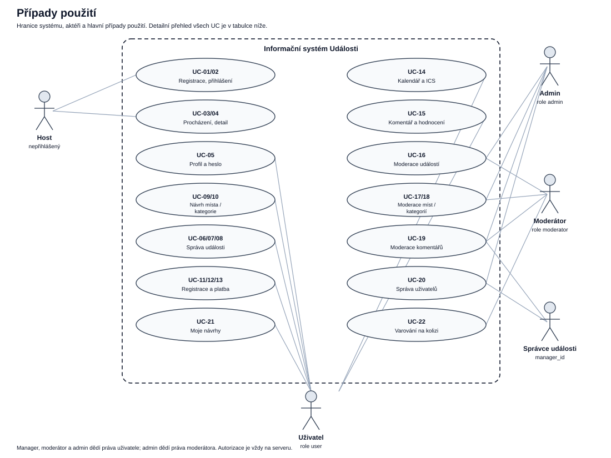
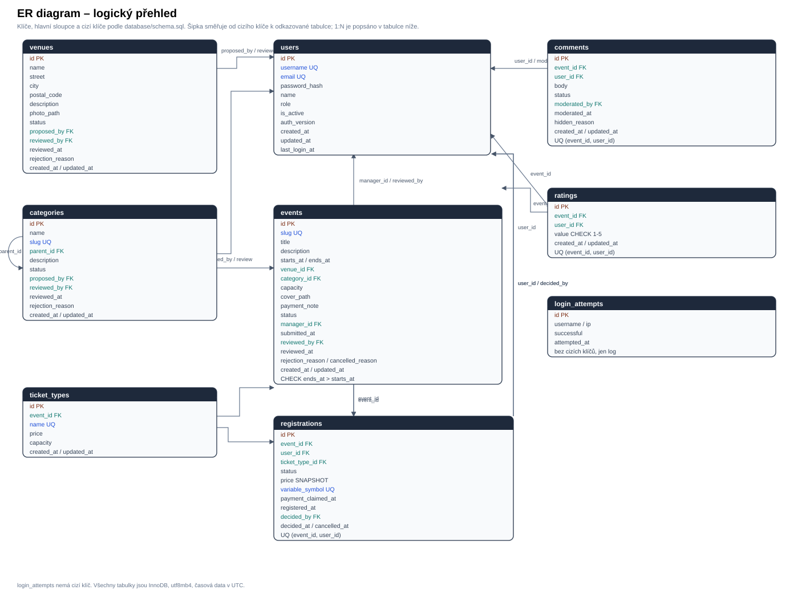
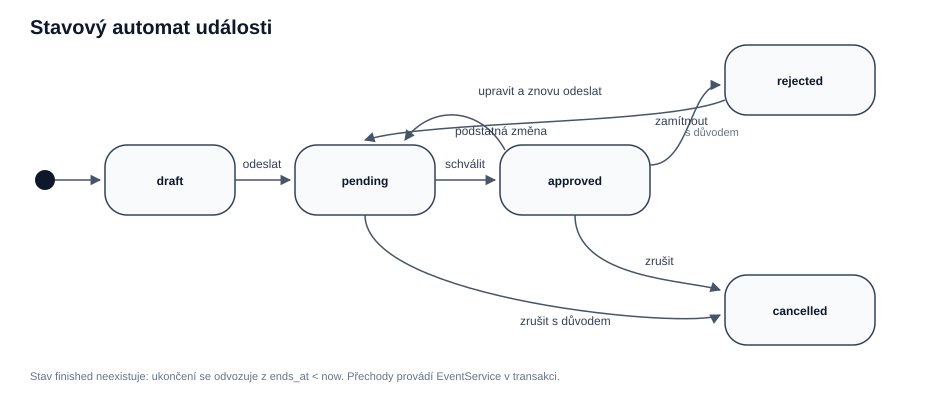
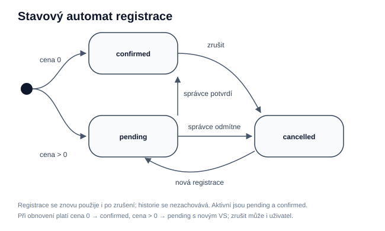
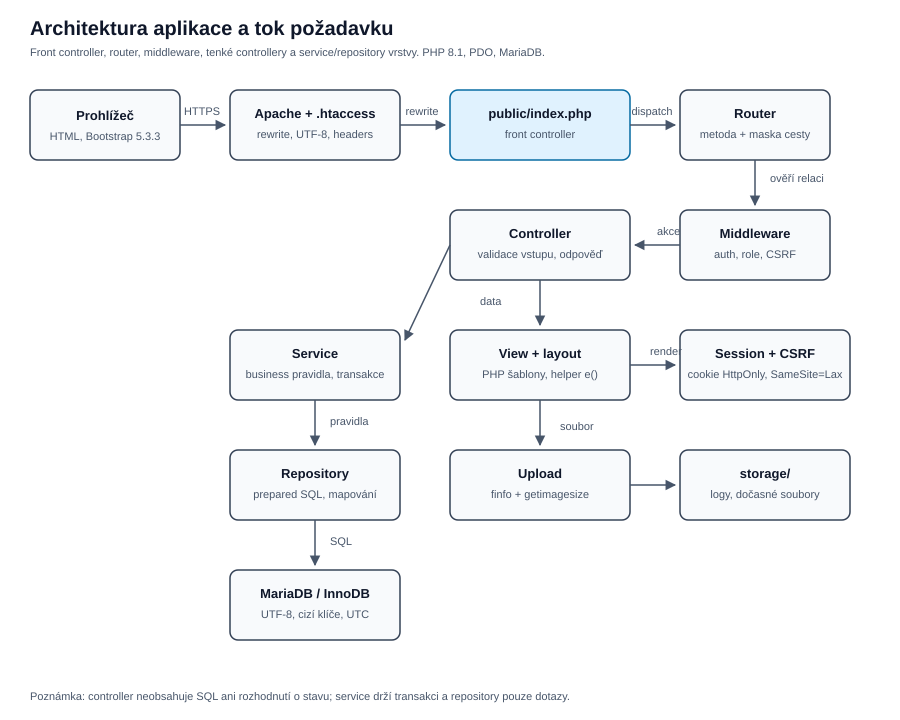

Dokumentace k odevzdání · Informační systémy, FIT VUT · 9. 11. 2026
| Předmět / varianta | Informační systémy (IIS), FIT VUT – varianta „Správa událostí“ |
| Tým | Lukáš Dudek, Honzík |
| Dokumentace | 9. 11. 2026 |
| Repozitář | https://github.com/lukas-dudek/IIS |
| Lokální URL | http://127.0.0.1:8000 |
| Veřejná URL (Eva) | připravuje se nasazení |
| Prohlížeče | Chrome, Firefox; rozlišení 360 / 768 / 1280 px |
| Vrstva | Technologie / verze | Poznámka |
|---|---|---|
| Backend | PHP 8.1.34, vlastní malé MVC, PDO | Žádný framework ani ORM v runtime |
| Databáze | MariaDB 13.0.2, InnoDB, utf8mb4_czech_ci | Časy v UTC, peníze DECIMAL(10,2) |
| Frontend | HTML5, CSS, Bootstrap 5.3.3, vanilla JS | Bootstrap je nahrán lokálně, bez CDN |
| Webový server | Apache (produkce), php -S (lokální vývoj) | .htaccess s rewrite a hlavičkami |
| Testy | PHPUnit 10 | Jen lokálně; vendor/ se do produkce nenahrává |
database/schema.sql, routy v config/routes.php.
Tento doc.html není součástí public/ document rootu, proto může obsahovat testovací účty a hesla.
Systém slouží pro správu akcí pořádaných uživateli: koncert, přednáška, workshop, seminář a podobné události.
Každá událost má termín, místo, kategorii, popis, volitelnou kapacitu a jeden či více typů vstupenek.
Místa a kategorie procházejí návrhem a schválením. Událost procházejí stavy
draft, pending, approved, rejected, cancelled;
stav finished záměrně neexistuje, ukončení se odvozuje z ends_at.
| Aktér | Popis | Hlavní činnosti |
|---|---|---|
| Host | nepřihlášený návštěvník | prochází schválené události, detail, filtry, vyhledávání |
| Uživatel | registrovaný účet s rolí user | registrace na akce, profil, kalendář, komentáře a hodnocení po akci |
| Správce události | uživatel, který je events.manager_id | zakládá a upravuje svou událost, odesílá ke schválení, potvrzuje úhrady |
| Moderátor | role moderator | schvaluje události, místa, kategorie; moderuje komentáře |
| Admin | role admin | práva moderátora + správa uživatelů a rolí |

| ID | Případ použití | Aktér | P | Klíčový výsledek |
|---|---|---|---|---|
| UC-01 | Registrace uživatele | host | P0 | vznikne aktivní účet role user |
| UC-02 | Přihlášení, odhlášení, timeout | všichni | P0 | bezpečná relace, automatické odhlášení |
| UC-03 | Procházení a vyhledávání událostí | host | P0 | seznam s filtry a stránkováním |
| UC-04 | Detail události | host | P0 | údaje, vstupenky, komentáře, hodnocení |
| UC-05 | Správa profilu a hesla | uživatel | P0 | změna údajů, invalidace relací |
| UC-06 | Vytvoření události a vstupenek | uživatel | P0 | koncept nebo odeslaná událost |
| UC-07 | Odeslání události ke schválení | správce | P0 | stav pending, fronta moderátora |
| UC-08 | Úprava a zrušení události | správce | P0 | změny dle stavu, zrušení s dopadem na registrace |
| UC-09 | Návrh místa konání | uživatel | P0 | místo pending, fronta moderátora |
| UC-10 | Návrh kategorie | uživatel | P0 | kategorie pending, kontrola stromu |
| UC-11 | Registrace na událost | uživatel | P0 | confirmed nebo pending dle ceny |
| UC-12 | Potvrzení úhrady | správce | P0 | pending → confirmed |
| UC-13 | Zrušení registrace | uživatel / správce | P0 | uvolnění místa, stav cancelled |
| UC-14 | Osobní kalendář a export | uživatel | P0 | přehled a .ics |
| UC-15 | Komentář a hodnocení | účastník | P0 | jeden komentář, jedno hodnocení |
| UC-16 | Moderace událostí | moderátor | P0 | schválení/zamítnutí s odůvodněním |
| UC-17 | Moderace a správa míst | moderátor | P0 | schválení, úprava, bezpečné mazání |
| UC-18 | Moderace a správa kategorií | moderátor | P0 | strom, přesun, bezpečné mazání |
| UC-19 | Moderace komentářů | moderátor | P0 | skrytí/zobrazení s důvodem |
| UC-20 | Správa uživatelů a rolí | admin | P0 | CRUD, deaktivace, role, reset hesla |
| UC-21 | Přehled mých návrhů | uživatel | P1 | stav návrhů míst a kategorií |
| UC-22 | Varování na kolizi místa | moderátor | P1 | informace, ne automatický zákaz |

Diagram je logický přehled klíčů a cizích klíčů. Úplný výčet sloupců, typů, indexů a CHECK omezení
je v database/schema.sql. Všechny tabulky jsou InnoDB, utf8mb4,
časová data se ukládají v UTC.
| Tabulka | Účel | Klíčová omezení a integrita |
|---|---|---|
users |
Uživatelé, role, aktivita, verze relace | UNIQUE username/email, role enum, auth_version pro invalidaci relací |
venues |
Místa konání, návrh a schválení | status, proposed_by RESTRICT, reviewed_by SET NULL |
categories |
Hierarchické kategorie | parent_id RESTRICT, max hloubka 4 v aplikaci, UNIQUE slug |
events |
Události a jejich životní cyklus | venue_id/category_id/manager_id RESTRICT, ends_at > starts_at, capacity NULL = neomezeno |
ticket_types |
Typy vstupenek, cena, kapacita | event_id CASCADE, price >= 0, UNIQUE (event_id, name) |
registrations |
Registrace, platba, snapshot ceny | UNIQUE (event_id, user_id), unikátní variable_symbol, price snapshot |
comments |
Komentáře po ukončení | UNIQUE (event_id, user_id), event_id CASCADE, skrytí s důvodem |
ratings |
Hodnocení 1–5 | UNIQUE (event_id, user_id), value BETWEEN 1 AND 5, event_id CASCADE |
login_attempts |
Omezení neúspěšných přihlašovacích pokusů | Bez cizích klíčů; indexy na username a ip pro časové okno |
| Vztah | Kardinalita | Chování |
|---|---|---|
users → venues | 1 : N | proposed_by RESTRICT, reviewed_by SET NULL |
users → categories | 1 : N | proposed_by RESTRICT, reviewed_by SET NULL |
users → events | 1 : N | manager_id RESTRICT, reviewed_by SET NULL |
users → registrations | 1 : N | user_id RESTRICT, decided_by SET NULL |
users → comments | 1 : N | user_id RESTRICT, moderated_by SET NULL |
users → ratings | 1 : N | user_id RESTRICT |
venues → events | 1 : N | RESTRICT – místo s událostmi nelze smazat |
categories → events | 1 : N | RESTRICT – kategorie s událostmi nelze smazat |
categories → categories | 1 : N | parent_id RESTRICT – potomci musí být odebráni dříve |
events → ticket_types | 1 : N | CASCADE – typy vstupenek se mažou s událostí |
events → registrations | 1 : N | RESTRICT – událost s registracemi nelze smazat, jen zrušit |
events → comments | 1 : N | CASCADE – komentáře se mažou s událostí |
events → ratings | 1 : N | CASCADE – hodnocení se mažou s událostí |
ticket_types → registrations | 1 : N | RESTRICT – typ s registracemi nelze smazat |


pending; popis a fotka se mění bez schvalování.cancelled.confirmed; s cenou > 0 je pending a čeká na potvrzení správcem.pending i confirmed, ne cancelled.
public/index.php je jediný dynamický vstup; .htaccess přepíše neexistující cesty na index.php.app/bootstrap.php nařeže autoload, konfiguraci, session, databázi, služby a view helpery.Request normalizuje method, path, GET/POST a IP; parametry z cesty se řeší v routeru.Router porovná metodu a cestu z config/routes.php; statické cesty jsou registrovány před parametrickými, masky {id} a {slug} jsou omezené.auth, roli a (pro POST) CSRF token. Neexistující nebo cizí záznam se chová jako 404/403, ne 500.app/
├── bootstrap.php # autoloading, config, session, DB, služby
├── Core/ # Router, Request, Response, View, Database, Session,
│ # Auth, Authorization, Csrf, Validator, Flash, Config,
│ # Logger, Upload
├── Controllers/ # tenké controllery (Auth, Profile, Event, Registration…)
├── Services/ # business pravidla a transakce (Event, Venue, Category…)
├── Repositories/ # explicitní SQL a mapování (EventRepository,…)
├── Views/ # šablony: layouts, partials, errors, feature views
└── Support/ # helpers: datum, slug, ICS, formuláře
config/
├── config.example.php # vzor konfigurace
└── routes.php # zdroj pravdy pro routy
database/
├── schema.sql # zdroj pravdy pro schéma
└── seed.sql # demo data
public/ # document root
├── index.php # front controller
├── router.php # lokální php -S, vrátí false pro statické soubory
├── .htaccess # rewrite, UTF-8, headers, dotfiles denied
├── assets/ # CSS, JS, lokální Bootstrap
└── uploads/ # obrázky (PHP vypnuto, jen JPEG/PNG/WebP)
storage/
├── logs/ # PHP chyby a runtime logy
└── tmp/ # dočasné soubory
tests/
├── bootstrap.php
├── Unit/ # ICS, plural, Request, Validator
└── Integration/ # service, DB, repository, HTTP-ish integration
bin/
└── check.sh # php -l, zakázané vzory, PHPUnit
docs/
├── doc.html # tento dokument
├── obhajoba.md # vysvětlení klíčových rozhodnutí
└── diagrams/ # SVG diagramy
AGENTS.md.Mapování případů použití na konkrétní routy, controllery, šablony a služby. Všechny POST routy vyžadují CSRF token a po úspěchu přesměrují (PRG).
| UC | Routa | Controller@action | Šablona | Service / Repository |
|---|---|---|---|---|
| UC-01 | GET/POST /registrace | AuthController@showRegister / register | auth/register.php | AuthService, UserRepository |
| UC-02 | GET/POST /prihlaseni, POST /odhlaseni | AuthController@showLogin / login / logout | auth/login.php, layout | AuthService, Session, Auth, Csrf |
| UC-03 | GET /udalosti | EventController@index | events/index.php | EventRepository |
| UC-04 | GET /udalosti/{slug} | EventController@show | events/show.php | EventRepository, TicketTypeRepository, CommentRepository, RatingRepository |
| UC-05 | GET/POST /profil, POST /profil/heslo | ProfileController@edit / update / password | profile/edit.php | UserService, UserRepository |
| UC-06 | GET /udalosti/nova, POST /udalosti | EventController@create / store | events/form.php | EventService, EventRepository, TicketTypeRepository |
| UC-07 | POST /udalosti/{id}/odeslat | EventController@submit | events/mine.php | EventService |
| UC-08 | GET/POST /udalosti/{id}/upravit, POST /udalosti/{id}, POST /udalosti/{id}/zrusit | EventController@edit / update / cancel | events/form.php, events/mine.php | EventService, RegistrationService |
| UC-09 | GET/POST /mista/navrhnout, GET/POST /mista/{id}/upravit | VenueController@propose / editProposal | venues/form.php | VenueService, VenueRepository |
| UC-10 | GET/POST /kategorie/navrhnout, GET/POST /kategorie/{id}/upravit | CategoryController@propose / editProposal | categories/form.php | CategoryService, CategoryRepository |
| UC-11 | POST /udalosti/{slug}/registrace | RegistrationController@store | events/show.php | RegistrationService, RegistrationRepository, TicketTypeRepository |
| UC-12 | GET /udalosti/{id}/ucastnici, POST /registrace/{id}/potvrdit, POST /registrace/{id}/odmitnout | RegistrationController@participants / confirmPayment / rejectPayment | registrations/participants.php | RegistrationService |
| UC-13 | POST /registrace/{id}/zrusit | RegistrationController@cancel | registrations/index.php | RegistrationService |
| UC-14 | GET /muj-kalendar, GET /muj-kalendar.ics | CalendarController@index / export | calendar/index.php | EventRepository, app/Support/ics.php |
| UC-15 | POST /udalosti/{slug}/komentar, POST /komentar/{id}/upravit, POST /komentar/{id}/smazat, POST /udalosti/{slug}/hodnoceni | CommentController@store / update / destroy, RatingController@store | events/show.php | FeedbackService, CommentRepository, RatingRepository |
| UC-16 | GET /moderace/udalosti, GET /moderace/udalosti/{id}, POST …/schvalit, POST …/zamitnout | ModerationController@events / event / approveEvent / rejectEvent | moderation/events.php, moderation/event.php | EventService, EventRepository |
| UC-17 | GET /moderace/mista, GET/POST /moderace/mista/novy, GET /moderace/mista/{id}, GET/POST /moderace/mista/{id}/upravit, POST …/schvalit|zamitnout|smazat | ModerationController@venues / createVenue / venue / editVenue / approveVenue / rejectVenue / deleteVenue | moderation/venues.php, moderation/venue.php | VenueService, VenueRepository |
| UC-18 | GET /moderace/kategorie, GET/POST /moderace/kategorie/nova, GET /moderace/kategorie/{id}, GET/POST /moderace/kategorie/{id}/upravit, POST …/schvalit|zamitnout|smazat | ModerationController@categories / createCategory / category / editCategory / approveCategory / rejectCategory / deleteCategory | moderation/categories.php, moderation/category.php | CategoryService, CategoryRepository |
| UC-19 | GET /moderace/komentare, POST /moderace/komentare/{id}/skryt, POST /moderace/komentare/{id}/zobrazit | ModerationController@comments / hideComment / showComment | moderation/comments.php | FeedbackService, CommentRepository |
| UC-20 | GET /admin/uzivatele, GET/POST /admin/uzivatele/novy, GET/POST /admin/uzivatele/{id}/upravit, POST /admin/uzivatele/{id}/heslo|deaktivovat|aktivovat|smazat | AdminUserController@index / create / edit / resetPassword / deactivate / activate / delete | admin/users/index.php, admin/users/form.php | UserService, UserRepository |
| UC-21 | GET /moje-navrhy | ProfileController@proposals | profile/proposals.php | VenueService, CategoryService |
| UC-22 | GET /moderace/udalosti/{id} | ModerationController@event | moderation/event.php | EventService, EventRepository |
*, legenda * povinné pole; nepovinná pole jsou jasně vyznačena.Europe/Prague pomocí helperů v app/Support/dates.php.-2, -3….| Útočný vektor | Ochrana | Kde / jak |
|---|---|---|
| Hesla | password_hash() / password_verify() | AuthService, UserService; žádný plaintext, žádný vlastní hash |
| Brute force přihlášení | Rate limit 5 neúspěšných pokusů / 10 minut | login_attempts podle username+IP; po limitu odhlásí a zamítne |
| Session fixation / fixace relace | session_regenerate_id(true) po přihlášení a odhlášení, use_strict_mode | Session, Auth |
| Invalidace relací | auth_version v session; zvýšení při deaktivaci, změně role a změně hesla | Auth::user() ověří shodu verze a aktivitu každé request |
| Session timeout | 30 minut neaktivity | session.timeout = 1800; po vypršení se relace vymaže |
| Cookie | HttpOnly, SameSite=Lax, Secure na HTTPS | Session::start() |
| CSRF | Token na session, ověření hash_equals u každého POST | Csrf, middleware POST rout, formuláře obsahují skryté pole _csrf |
| SQL injection | Pouze prepared statements, nikdy interpolační vstup do SQL | Database, všechny repository metody |
| XSS | Všechny výstupy escapují e(); CSP default-src 'self' | view helper e(), Response hlavičky |
| Clickjacking / MIME sniffing | X-Frame-Options: SAMEORIGIN, X-Content-Type-Options: nosniff | Response::send() |
| Upload | finfo + getimagesize, pouze JPEG/PNG/WebP, max 2 MB, náhodný název | Upload, public/uploads bez PHP |
| Autorizace | Middleware auth, role:moderator, role:admin; ownership kontrola v service | Authorization, controllers, services |
| Mass assignment | Formulářová pole se mapují ručně v controlerech | Request::postString/postInt/queryString, service metody |
| Path traversal | return parametry jen lokální cesty; Upload validuje složku a název | Request::returnUrl(), Upload::store() |
| Logy | Bez hesel, tokenů, celých formulářů a osobních údajů | Logger, storage/logs |
| Činnost | Host | Uživatel | Správce své události | Moderátor | Admin |
|---|---|---|---|---|---|
| procházet schválené události | ✓ | ✓ | ✓ | ✓ | ✓ |
| zobrazit detail schválené události | ✓ | ✓ | ✓ | ✓ | ✓ |
| registrovat se na událost | – | ✓ | ✓ | ✓ | ✓ |
| zrušit vlastní registraci | – | ✓ | ✓ | ✓ | ✓ |
| komentovat a hodnotit po ukončení | – | jen účastník | jen účastník | jen účastník | jen účastník |
| založit událost | – | ✓ | – | ✓ | ✓ |
| upravit / odeslat / zrušit událost | – | – | ✓, jen svou | – | ✓ |
| zobrazit účastníky a potvrzovat platby | – | – | ✓, jen své | – | ✓ |
| navrhnout místo / kategorii | – | ✓ | ✓ | ✓ | ✓ |
| schválit / zamítnout událost, místo, kategorii | – | – | – | ✓ | ✓ |
| spravovat schválený katalog míst a kategorií | – | – | – | ✓ | ✓ |
| moderovat komentáře | – | – | – | ✓ | ✓ |
| spravovat uživatele a role | – | – | – | – | ✓ |
| vidět moderátorské fronty | – | – | – | ✓ | ✓ |
# lokální databáze
mysql -u root -p -e "CREATE DATABASE IF NOT EXISTS iis CHARACTER SET utf8mb4 COLLATE utf8mb4_czech_ci;
CREATE DATABASE IF NOT EXISTS iis_test CHARACTER SET utf8mb4 COLLATE utf8mb4_czech_ci;"
mysql -u root -p iis < database/schema.sql
mysql -u root -p iis < database/seed.sql
mysql -u root -p iis_test < database/schema.sql
mysql -u root -p iis_test < database/seed.sql
# konfigurace
cp config/config.example.php config/config.php # doplnit DB heslo a URL
# spuštění
php -S 127.0.0.1:8000 -t public public/router.php
# testy (IIS_DB_PASSWORD musí sedět s config.php)
composer install
IIS_DB_PASSWORD=*** vendor/bin/phpunit
# rychlá kontrola
PHP_BIN=php ./bin/check.sh
Výsledek: 77 testů, 279 asercí, OK (9. 11. 2026)
Workflow CI je nastavený pro push do main a pro každý PR: PHP 8.1, MariaDB service, composer install, ./bin/check.sh a plné PHPUnit včetně integračních testů s IIS_DB_PASSWORD. Běh v cloudu se ověří po prvním pushi; lokálně projíždí stejné příkazy.
| Typ | Soubor | Co ověřuje |
|---|---|---|
| Unit | IcsTest | validní ICS, escape, fold, UID, UTC časy |
| Unit | PluralTest | české tvary „výsledek / výsledky“ |
| Unit | RequestTest | hardening postString, postInt, queryString, limit delky, IP fallback |
| Unit | ValidatorTest | validace e-mailu, data, délky, formátu |
| Integration | AuthServiceTest | login, rate limit, session regeneration, auth_version |
| Integration | UserServiceTest | CRUD, deaktivace, reset hesla, poslední admin |
| Integration | VenueServiceTest | návrh, schválení, úprava, mazání, photo upload |
| Integration | CategoryServiceTest | strom, hloubka 4, cykly, přesun, mazání |
| Integration | EventServiceTest | stavy, podstatná změna, zrušení, kolize, vstupenky |
| Integration | RegistrationServiceTest | kapacita, duplicita, cena snapshot, VS, transakce |
| Integration | FeedbackServiceTest | komentáře/hodnocení jen po akci a pro confirmed |
| Integration | EventSearchTest | filtry, hledání, stránkování, archiv, dostupnost |
| Integration | ModerationQueueTest | dashboard, fronty, počty, kolizní varování |
| Integration | CalendarTest | měsíční kalendář, ICS export, managed/confirmed |
user) vytvoří událost, navrhuje místo a kategorii, odešle ke schválení.jana) se registruje na placenou událost, klikne „Uhradil jsem“.petr) vidí účastníky, VS a tvrzení o platbě; potvrdí úhradu.koncert-komorni-hudby) uživatel hodnotí a komentuje; moderátor může komentář skrýt.# 1. Databáze
mysql -u root -p -e "CREATE DATABASE iis CHARACTER SET utf8mb4 COLLATE utf8mb4_czech_ci;"
mysql -u root -p iis < database/schema.sql
mysql -u root -p iis < database/seed.sql
# 2. Konfigurace
cp config/config.example.php config/config.php
# upravit db.password, app.url, app.debug=false pro produkci
# 3. Spuštění
php -S 127.0.0.1:8000 -t public public/router.php
Nasazení na Evu je v přípravě
Veřejná URL bude doplněna po nasazení. Postup je popsán níže; aplikace je připravena k nasazení.
~/iis (aplikace) a ~/WWW -> iis/public (document root).mod_rewrite, mod_headers a UTF-8; .htaccess je v repozitáři.iis; heslo do config/config.php (nikdy do gitu).storage/ a public/uploads/ zapisovatelné.schema.sql + seed.sql jen jednou; opakovaný import přepíše data./, přihlášení všech rolí, DB dotaz, upload, session, ICS.| Komponenta | Verze |
|---|---|
| PHP | 8.1.34 |
| MariaDB | 13.0.2 |
| Bootstrap | 5.3.3 |
| PHPUnit | 10 |
database/seed.sql obsahuje data podle plánu: 10 uživatelů, 11 míst, 12 kategorií, 14 událostí, 20 typů vstupenek, 40 registrací, 15 komentářů, 20 hodnocení. Termíny pokrývají říjen–prosinec 2026.
| Uživatelské jméno | Heslo | Role | Popis |
|---|---|---|---|
admin | Admin1234! | admin | plná práva, správa uživatelů |
moderator | Moderator1234! | moderator | schvaluje události, místa, kategorie, komentáře |
moderator2 | Moderator2345! | moderator | druhý moderátor pro test kolizí a cross-review |
user | User1234! | user | běžný uživatel (Jan Novák); správce „Koncert komorní hudby“ a „Seminář: Moderní PHP“ |
jana | Jana1234! | user | účastnice (Jana Svobodová); správce „Workshop UX designu“, „Koncert pod hvězdami“, „Letní kino“ |
petr | Petr1234! | user | účastník (Petr Dvořák); správce „Přednáška o umělé inteligenci“, „Workshop fotografie“ |
eva | Eva1234! | user | účastnice (Eva Černá); správce „Divadelní večer“, „Jazzový večer“ |
martin | Martin1234! | user | účastník (Martin Kučera); správce „Běh Brnem“, „Silvestr 2026“ |
lucie | Lucie1234! | user | účastnice (Lucie Veselá); správce „Festival jaro“, „Přednáška o bezpečnosti“ |
neaktivni | Neaktivni1234! | user | neaktivní účet – login musí selhat |
/udalosti, filtry kategorie/město/cena, detail, CTA na login.vanocni-trh) – kapacita 2, plná, tlačítko registrace zakázané.koncert-komorni-hudby) – hodnocení a komentáře dostupné jen confirmed účastníkům.user vidí stav Čeká na platbu a Potvrzeno.Odkaz doplní vedoucí po nahrání
Video o délce cca 5 minut ukáže hlavní toky aplikace: host → vyhledávání a detail → registrace → moderace → placená registrace a potvrzení → kalendář/ICS → hodnocení/komentář → admin. Nahrát ve 1080p, česky, bez zobrazení hesel a osobních údajů.
IIS FIT VUT · https://github.com/lukas-dudek/IIS · Dokumentace: docs/doc.html ·
Pracovní vysvětlení: docs/obhajoba.md